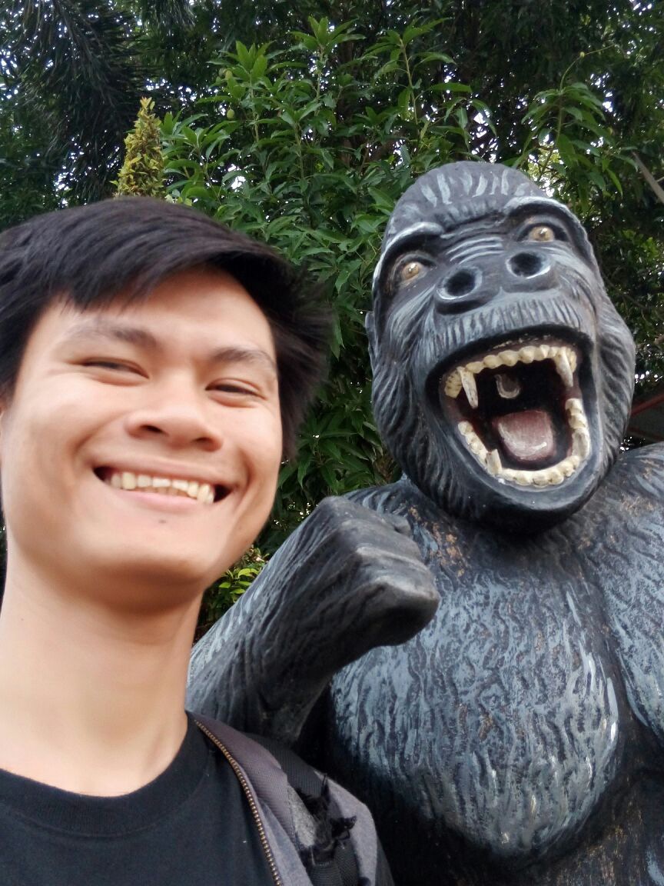

Ammon Capate | WDD 130
Greetings, everyone! My name is Ammon Caro Capate, and I am from General Santos City Philippines. I have some experience in front-end development, I learned all of it by myself from the internet. I really like the internet, there is so much possibily in there. I am a member of The Church of Jesus Christ of Latter-day Saints. I serve my full time mission in Philippines, Quezon City Mission. I am 5 years married to my wife and we have a son named Azael Auron. Enrolling in a website development course has significantly elevated my proficiency in crafting websites. Through this learning journey, not only have I honed my skills, but I've also streamlined my workflow, enabling me to work more efficiently.